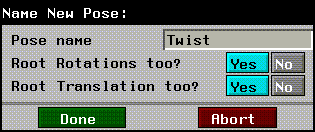

[N-World Contents] [Book Contents] [Prev] [Next] [Index]
Skeletons in N-Geometry (cont.)
Pose
Skeletons
For a skeleton and its attached skins:
Moving the Skeleton to a Saved Pose
To move the skeleton to a saved pose:
1. (SHIFT-L) on the skeleton.
2. (CLICK-L) on Pose.
- A menu with any saved poses for the skeleton is displayed:
Figure 2.77 Moving the skeleton to a selected pose
3. (CLICK-L) on the pose you want to move the skeleton toward.
4. Move the mouse left to right to animate the skeleton toward the selected pose.
(SHIFT-L) animates the skeleton to the selected pose but does not update the attached skins.
Saving the Skeleton's Current Position as a Pose
To save the skeleton in its current state as a pose:
1. (SHIFT-L) on the skeleton.
2. (CLICK-M) on Pose.
3. Enter the name of the pose in the dialog box that is displayed:

Figure 2.78 Naming a saved pose
(SHIFT-L) animates the skeleton to the selected pose but does not update the attached skins.
Rename or Delete a Pose
To delete or rename a saved pose:
1. (SHIFT-L) on the skeleton.
2. (CLICK-R) on Pose.
- The following menu is displayed:
Figure 2.79 Deleting or renaming a pose
Renaming a Pose
Displays a list of poses saved for the skeleton. (CLICK-L) on the pose you want to rename, then change that name in the dialog box that appears.
Deleting a Pose
Displays a list of saved poses. After selecting the pose to delete, you're asked to confirm this choice.
Position
Skeletons
Lets you select a point at which to place the root of the skeleton.
To reposition the skeleton:
1. (SHIFT-L) on the Skeleton.
2. (CLICK-L) on Position.
- The cursor in the N-Geometry menu changes so that only points can be selected.
3. (CLICK-L) on the point where you want to center the skeleton (or (CLICK-R) to abort).
- The skeleton changes to its new position.
Rename
Bones, joints
Renames the selected element.
To rename a bone or joint:
1. (SHIFT-L) on the element you want to rename.
2. (CLICK-M) on Rename.
- Enter the new name for the element in the dialog box that appears.
- If more than one element has been collected when this command is invoked, you are asked to rename each bone sequentially.
- Note. If you want to rename an entire skeleton, (SHIFT-L) on the skeleton object and choose Rename, or use the Rename command on the GeoMenus.
Rotate
Skeletons
To rotate the entire skeleton in 3D space:
1. (SHIFT-L) on the skeleton.
For a more complete description of the Rotate command, see the N-Geometry Reference Guide.
Rotate/Twist
Bones
Rotates or twists the bone, optionally taking into account any DOF limits you have defined for the bone.
For example, if you (CLICK-M) to rotate a bone aligned with its local Y axis, the bone would only twist according to the DOF limits defined for that bone. If you attempt to move a bone in a completely restricted plane, a dialog appears telling you this move is restricted.
Rotating a Bone around its Local Axes
Twisting a Bone around the Bone Direction Axis
Rotating a Bone (translated)
Figure 2.80 Moving the mouse left/right moves the bone in one plane
Figure 2.81 Moving the mouse forward and back moves skeleton in the plane perpendicular to moving it left and right
Figure 2.82 (HOLD-M) rotates a bone around its local bone direction axis
(The actual directions may be slightly different depending on the bone's directional axis, but the effects are similar.)
Scale
Skeletons
Scale the skeleton using one of a number of available methods. If you have questions about how a particular method works, save your work and try scaling a skeleton with some of the various options.
- Note. If you want to scale the skeleton and keep the root in its current position, use Scale around an Arbitrary Vertex and choose the root.
Scale Uniformly around Individual Midpoints
To scale the skeleton uniformly:
1. (SHIFT-L) on the skeleton.
2. (CLICK-L) on Scale.
- The skeleton is scaled uniformly in all three directions.
Scale around an Arbitrary Vertex
To scale the skeleton around an arbitrary vertex:
1. (SHIFT-L) on the skeleton.
2. (CLICK-M) on Scale.
3. Select a point (usually on the skeleton) around which to scale the entire skeleton.
- That point appears to be "locked" and the skeleton scales around it.
Scaling around a Selected Element
To scale the skeleton around a selected element:
1. (SHIFT-L) on the skeleton.
2. (CLICK-R) on Scale.
- N-Geometry presents a menu that lets you specify how you want to scale the skeleton. For a description of each of the options on the scaling menu, see the N-Geometry Reference Guide.
Scale Axis
Bones
This command scales the local axis on a bone. This operation is useful on a complicated skeleton, where there are a large number of axes near each other and you want to make the axis for one bone (or several bones) stand out from the others.
Figure 2.83 Scaling the bone's local axis
Scale Bone
Bones
Scales the selected bone.
Select Attachments
Skeletons, bones
This command selects any attached objects associated with the currently selected bone or skeleton.
1. (SHIFT-L) on the bone (or skeleton) whose attached objects you want to see.
2. (CLICK-L) on Select Attachments.
- The object or (objects) attached to the bone are selected in the N-Geometry window:
Figure 2.84 Selecting Attachments
If you have multiple objects attached to a bone or skeleton, you can use (CTRL-*) on the Select Attachments command to display a menu of attached objects. On that menu, highlight any objects you want to select.
- Note. Objects can also be selected using the Browser.
Select Elements
Skeletons
Collects the specified points or segments in the selected body.
If you use (CTRL-L), you can enter a LISP form which lets you specify which elements to select, (e.g., all elements with the :shoulder ID).
Selecting the Points on a Skeleton
To select the points of the currently selected skeleton:
1. (SHIFT-L) on the skeleton.
2. (CLICK-L) on Select Elements.
- All points on the skeleton are highlighted.
Selecting the Bones on a Skeleton
To select the segments of the currently selected skeleton:
1. (SHIFT-L) on the skeleton.
2. (CLICK-M) on Select Elements.
- All segments on the skeleton are highlighted.
Select Joint
Bones
Selects the inferior or superior joint of the selected bone.
Selecting the Inferior Joint of the Bone
To select the inferior joint of the bone (further from the root):
1. (SHIFT-L) on the bone whose inferior joint you want to select.
2. (CLICK-L) on Joint.
- Points is highlighted in the sensitivity element menu and the inferior joint of the bone is selected.
Selecting the Superior Joint of the Bone
To select the superior joint of the bone (closer to the root):
1. (SHIFT-L) on the bone whose superior joint you want to select.
2. (CLICK-M) on Joint.
- Points is highlighted in the sensitivity element menu and the superior joint of the bone is selected.
Select Skins
Skeletons, bones
This command highlights the vertices on any skins associated with the currently selected bone or skeleton.
1. (SHIFT-L) on the bone (or skeleton) whose skin parts you want to see.
The vertices in the selected parts are highlighted in the N-Geometry window:
Figure 2.85 Selecting skin parts
Skin
Skeletons
Performs the following "skinning" operations:
Attaching a Skin to a Skeleton
To attach a skin to a skeleton:
1. (SHIFT-L) on the skeleton you want to attach a skin to.
2. (CLICK-L) on Skin.
- A list of objects in the current N-Geometry scene is displayed.
3. (CLICK-L) on the object you want to attach as the skin.
- The following dialog box is displayed:
Figure 2.86 Making skin parts
4. If you chose Yes in step 3, the following dialog box is displayed:

Figure 2.87 How to make skin parts
Now, when you move the skeleton, the skin updates accordingly. See the Skeletal Animation System Tutorial for more information on assigning skin parts.
Detaching a Skin from a Skeleton
To detach a skin from the currently selected skeleton:
1. (SHIFT-L) on the skeleton you want to detach a skin from.
2. (CLICK-M) on Skin.
- A list of skins attached to the skeleton is displayed.
3. (CLICK-L) on the skin you want to detach.
4. (CLICK-L) on Do It.
- The skin is detached from the skeleton.
Skin Displacement
Skeletons, bones
Skin displacements are "secondary" displacements-changes that occur in the skin's shape, but which are not necessarily related to skeletal motion (such as the flexing of a muscle when a limb is rotated).
(Creating skin displacements is described briefly below, in the section describing saving skin displacements.)
- Note. Skin displacements are associated with the movement of a single bone about a single DOF.
Editing an Existing Skin Displacement
Figure 2.88 Choosing a skin displacement to edit
- (CLICK-L) on the skin displacement you want to edit. A dialog box similar to that shown below opens:
Figure 2.89 Editing a skin displacement
- Note. You must have defined at least one skin displacement for this command to be used.
Creating a Skin Displacement and Linking it to a Bone's Position
1. Rotate a single bone in a single axis.
- Use the XYZ Rotate command to make sure you rotate the bone in only a single direction-if you try to make a skin displacement for a bone that has been rotated in more than one direction, an error message is displayed.
2. Modify the skin so that it looks like it should when the bone is rotated to its current position.
3. (SHIFT-L) on the bone you want to associate the skin displacement with.
- This is typically the bone below the joint; for example, if you're defining a skin displacement for the bicep, that displacement should be saved with the forearm, since its X rotation causes the displacement.
4. (CLICK-M) on Skin Displacement.
- Enter the name of the skin displacement in the dialog box that appears.
- Note. If the selected bone has been rotated in more than one plane (when compared to the base position of the skeleton), an error message is displayed. Skin displacements can only be associated with a bone that has moved in a single axis.
- Now, when you rotate the bone, the skin is displaced toward the saved skin displacement.
Renaming or Deleting a Skin Displacement
Figure 2.90 Choose whether to rename or delete
Renaming a Skin Displacement
If you (CLICK-L) on Rename, a list of any skin displacements saved with the bone is displayed:

Figure 2.91 Skin displacement list
(CLICK-L) on the displacement you want to rename, then enter the new name for the displacement in the dialog box that appears.
Deleting a Skin Displacement
If you (CLICK-L) on Delete, a list of any skin displacements saved with the bone is displayed:
Figure 2.92 Skin displacement list
(CLICK-L) on a displacement to delete it or on Abort if you change your mind.
- Note. Although skin displacements are associated with a particular bone, this command can also be used if you've forgotten which bone a skin displacement was associated with.
Skin Update
Skeletons, bones, joints
Sets how skins are updated when the selected element is moved. To define the skin update mode for an element, (SHIFT-L) on the element, then (CLICK-L) on Skin Update. Depending on the element type selected, one of the following menus is displayed:
Figure 2.93 Selecting a skin update mode: Follow while moving, follow without displacements, snap to element after moving
Follow Elements
Updates the skins interactively as you move the element (also taking into account any skin displacements that have been defined).
This is the slowest Skin Update mode, but the most accurate (if you want to see how displacements will be layered on top of bone driven animation).
Follow Elements without Displacements
Updates the skins interactively as well, but ignores any skin displacements that have been defined until the bone is in its new position. Similar to the method above, but doesn't animate displacements.
This Skin Update mode is faster than the follow elements mode. Use this mode if you aren't using any skin displacements.
Snap to Bone(s)
Reposition the skeleton, bone, or joint without updating the skin; when you complete the reposing, the skin "snaps" to the new position.
This is the fastest Skin Update mode. Use this mode if you are working with very large skins where you need quick response.
Soft Influence
Bones
After you assign a soft part to a skeleton, you may change the function which calculates the soft influence for that soft part. The soft influence specifies how the soft skin part is "deformed." This is the amount of inferior vs. superior influence on the soft part.
The default is a sinusoidal treatment, which has an equal falloff of influence in both directions (0 is superior and 1 is inferior).
Recalculating the Soft Influence for a Bone
To recalculate the soft influence for a bone:
1. (SHIFT-L) on the bone to which you have assigned a soft part.
2. (CLICK-L) on Soft Influence.
- The following dialog box is displayed:
Figure 2.94 Calculating the soft influence for a bone
Traverse
Bones, joints
Traverse up or down the skeleton, toward or away from the root, selecting the next element of the currently selected type.
This is useful if you are working in a very tight space, with multiple small bones.
Selecting an Element's Inferior
To select an element's inferior (the element further from the root):
1. (SHIFT-L) on the element whose inferior you want to select.
2. (CLICK-L) on Traverse.
- The element directly below the selected element (in relationship to the root) is selected.
Selecting an Element's Superior
To select an element's superior (the element closer to the root):
1. (SHIFT-L) on the element whose superior you want to select.
2. (CLICK-M) on Traverse.
- The element directly above the selected element (in relationship to the root) is selected.
Selecting the Element at the Top of a Limb
To select the element at the top (beginning) of the limb for the currently selected element:
1. (SHIFT-L) on the element you want to trace back to the root.
2. (CLICK-R) on Traverse.
- The element at the top of the limb (attached to the root) is selected.
XYZ IK Rotate Root
Joints
The XYZ IK Rotate Root operation is similar to the IK Rotate Root operation, with the exception that rotation occurs around a single axis (X, Y, or Z).
Here's the basic concept:
Try this:
1. Create a skeleton primitive.
2. (CLICK-L) on points on the element sensitivity menu.
3. (SHIFT-L) on the right ankle joint.
4. (CLICK-M) on IK Set.
- The IK Set dialog box appears. Make the following changes to the IK Set for the right ankle joint:
- When you're done, the IK Set should look like this:

Figure 2.95 Defining an IK Set for an XYZ IK Rotate Root operation
5. (CLICK-L) on Done to save the IK Set.
6. Enter a name for the IK Set in the dialog box that appears and (CLICK-L) on Done.
7. (SHIFT-L) on the right ankle joint, then (CLICK-R) on XYZ IK Rotate thru Root.
- Drag the mouse right to pose the skeleton as shown below. In this example, we're rotating the root around the Z axis:
Figure 2.96 Left, original skeleton; right, XYZ IK Rotate Root using right ankle joint
- The joint(s) that you "pinned" in step 7 (the right ankle in the example above) remain as close as possible to their pinned position. In addition, note that the root stays in its position as well.
Other Notes on XYZ IK Rotate Root
If you want the root to move when you execute the operation, hold down the SHIFT key when selecting the axis around which to rotate the root in step 7.
For example, if you (SHIFT-R) on XYZ IK Rotate thru Root, the root translates around the Z axis while the pinned joints (in this case, the right ankle) stay in place:
Figure 2.97 Left, original skeleton; right, (SHIFT-R) on XYZ IK Rotate Root using right ankle joint (allowing translation of root)
XYZ Rotate
Bones
Rotates the bone around the specified local axis of the bone. If you've already attached a skin to the skeleton, the skin is updated too. (If you hold down the SHIFT key, you can rotate the bone without affecting any attached skin.)
- Note. If you have created an IK set for a bone that prohibits movement in a plane, the bone does not move in that direction. For example, if you have prohibited movement in the X direction of the upper arm bone, then attempt to rotate that bone around its own X axis, nothing happens.
[N-World Contents] [Book Contents] [Prev] [Next] [Index]
 Another fine product from Nichimen documentation!
Another fine product from Nichimen documentation!
Copyright © 1996, Nichimen Graphics Corporation. All rights
reserved.